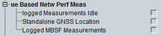

UE Based Network Performance Measurement UE Capabilities
This section indicates UE capabilities for UE-based network performance measurements.

Network performance measurement capabilities
Support of logged measurements in idle mode.
Remote command:Indicates whether the UE is equipped with a GNSS receiver or not.
Remote command:Support of logged MBSFN measurements in RRC idle and connected mode.
Remote command: